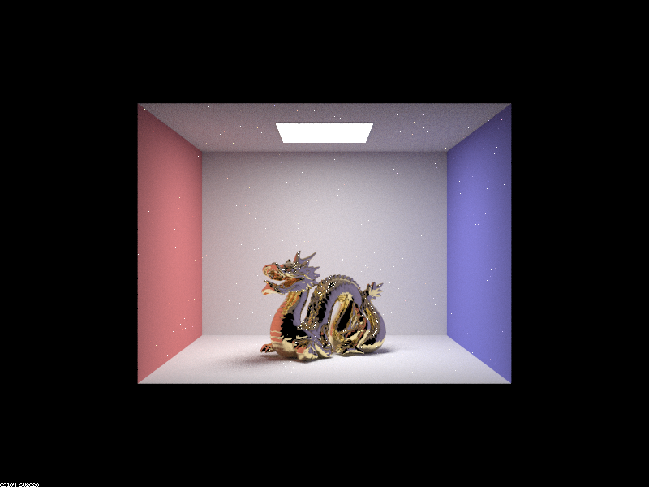
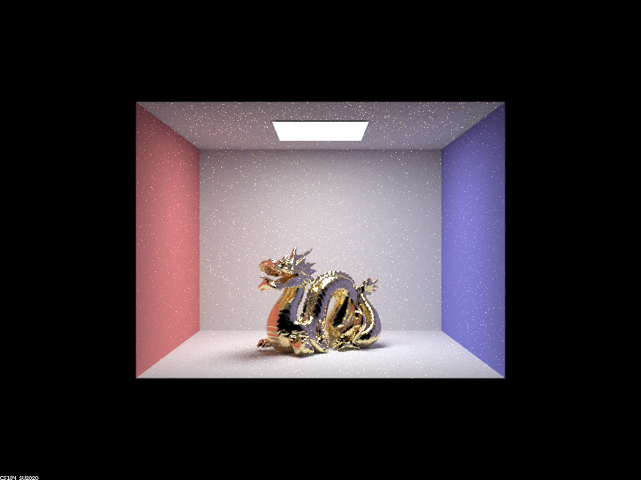
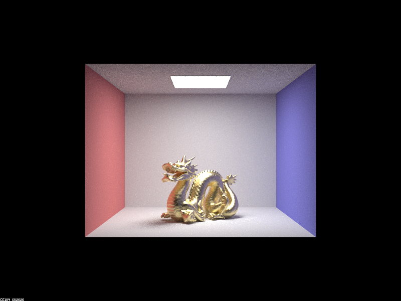
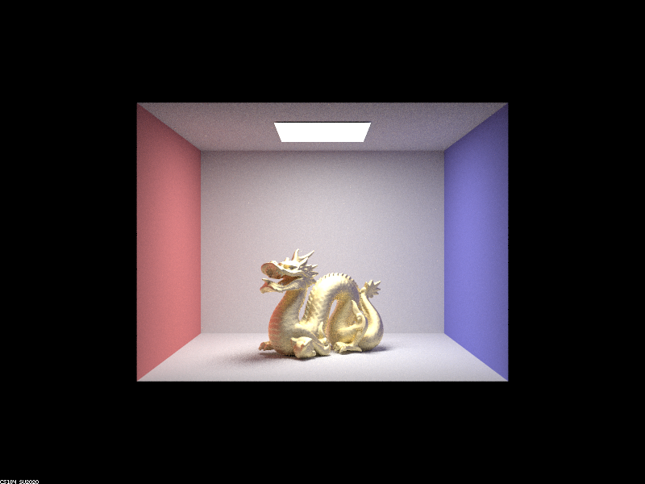
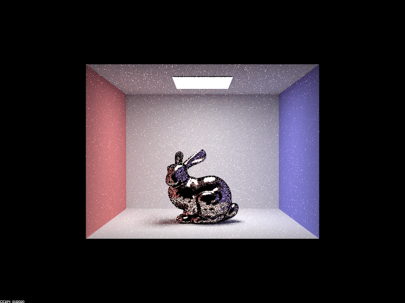
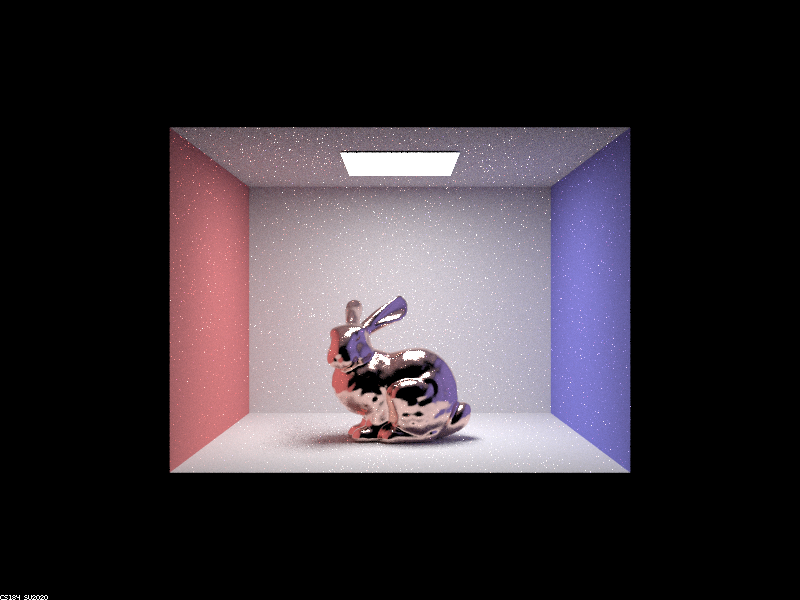
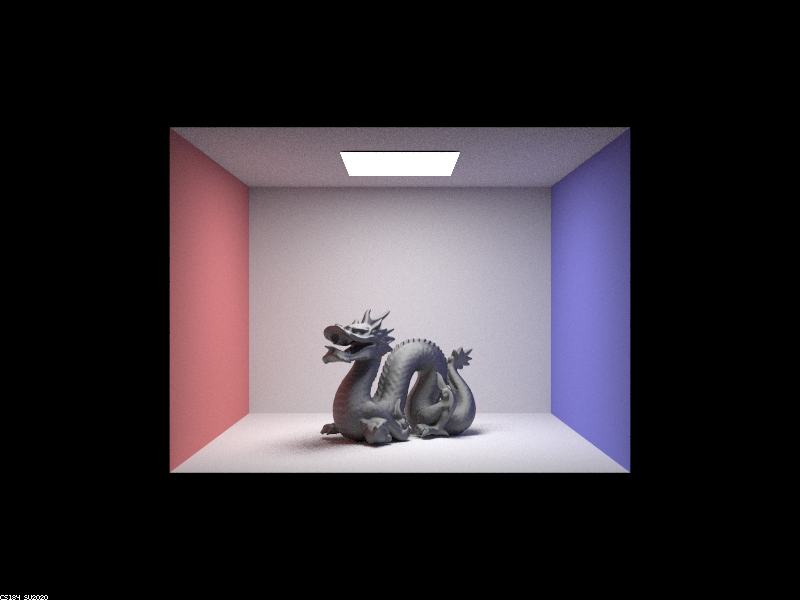
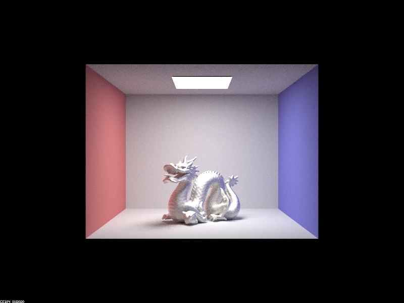

Overview
Link to Github: https://github.com/cal-cs184-student/p3-2-pathtracer-sp23-pixelwizards
In this project, we add in some final changes to the staff code for Project 3-1 to complete our pathtracer, namely Part 2: Microfacet Material, and Part 4: Depth of Field.
In Part 2, we implement microfacet models for various different textures: copper, gold, and aluminium/silver, for the bunny, dragon, and spheres. We replace the typical reflectance formulae with the revised MicrofacetBSDF::f() formula, which takes into account the roughness of the material and air-conductor reflectance. We utilize the air-conductor Fresnel term F(), the Normal Distribution function D(), and combine them with the input and output ray directions to obtain a more accurate surface reflectance. Lastly, we implement importance sampling correctly for the microfacet BSDF according to the Beckmann Normal Distribution Function.
In Part 4, we implement the thin-lens approximation in order to add a depth-of-field effect to our renders. Our eyes, glasses, and contacts all have lenses, which means that only one particular depth is entirely in focus at once, unlike the pinhole-camera like rendered images we have been generating upto this point. We accomplish this depth of field effect by placing a thin refractive lens in front of the camera, with variable lens radius, focal distance, and position.
In all, this project allows us to generate multiple different 3D environments with global illumination, realistic surface textures and lighting, and depth-of-field effect. The project does not accurately model refraction or environmental light correctly, however, since we chose not to implement the (optional) Part 1 and Part 3.
Part II: Microfacet Material
Show a screenshot sequence of 4 images of scene CBdragon_microfacet_au.dae rendered with α set to 0.005, 0.05, 0.25 and 0.5. The other settings should be at least 128 samples per pixel and 1 samples per light. The number of bounces should be at least 5. Describe the differences between different images. Note that, to change the α, just open the .dae file and search for microfacet.|

|

|

|

|
As α, which corresponds to roughness, increases from 0.005 to 0.5, we see that the surface of the material making up our dragon gets less smooth and glossy. However as this is the angle between our half vector h and macro surface normal n we also see that as this angle increases, the specularity decreases and hence noise decreases. This is why the images get duller but clearer as we move from left to right.
Show two images of scene CBbunny_microfacet_cu.dae rendered using cosine hemisphere sampling (default) and your importance sampling. The sampling rate should be fixed at 64 samples per pixel and 1 samples per light. The number of bounces should be at least 5. Briefly discuss their difference.
|

|

|
On the left is an image rendered using cosine hemisphere sampling, which is perfect for importance sampling diffuse BRDFs. However since we are using the microfacet model and we use Beckman distribution to describe how the microfacet's normals are distributed, we need to use a sampler that accurately shapes the Beckman distribution. This is why as we move from cosine hemisphere sampling to our implementation of importance sampling using Beckman NDF, we see the noise getting reduced significantly and the surface of the rabbit getting clearer as the normals are more accurately distributed.
Show at least one image with some other conductor material, replacing eta and k. Note that you should look up values for real data rather than modifying them arbitrarily. Tell us what kind of material your parameters correspond to.
|

|

|
We used the given website to compute the refractive index (eta) and extinction coefficient (k) at red, green and blue wavelengths for two materials other than gold (which was used for the previous images)- carbon and calcium.
Part IV: Depth of Field
Explain adaptive sampling. Walk through your implementation of the adaptive sampling.The point of adaptive sampling is to avoid the problem of using a static and high number of samples per pixel, by only using more samples in the more difficult parts of the image, that is where the illumination doesn’t converge as easily. So what we do is we find a convergence criterion, that is, some value in terms of the illuminations of our samples must be within some desired tolerance, and once this criterion is satisfied for a given pixel we stop sampling. This makes sure that we do not compromise on noise despite reducing the total number of samples used in pixels. We implemented adaptive sampling as follows: for each pixel, we compute the illumination (using global illumination) by taking the average over multiple random samples. As we take each sample, for every samples_per_batch (set to 32) samples, we maintain the mean and variance of the “illum()” of our illumination vectors (which have R, G and B components). If 1.96 times the standard deviation (square root of variance) divided by the square root of the number of samples so far is within the mean times the maximum tolerance (which we set to a default of 0.05) then we know our samples inside this pixel have converged within our desired tolerance. This equation (using a factor of 1.96) is based on wanting a 95% confidence interval. If this criterion is satisfied we stop sampling and return the average illumination for this pixel so far. Otherwise we continue sampling either until the criterion is satisfied for a higher number of samples or if the number of samples has reached its limit (set to ns_aa).
Pick two scenes and render them with at least 2048 samples per pixel. Show a good sampling rate image with clearly visible differences in sampling rate over various regions and pixels. Include both your sample rate image, which shows your how your adaptive sampling changes depending on which part of the image you are rendering, and your noise-free rendered result. Use 1 sample per light and at least 5 for max ray depth.

|

|

|

|
Link to Github: https://github.com/cal-cs184-student/p3-2-pathtracer-sp23-pixelwizards
We (Suhrid and Shrihan) worked on this project together. We took turns coding on each of our computers and periodically pushing the code to GitHub to match between us. We did not work on the same function simultaneously due to merge errors, but instead worked together, with one person reading the spec as the other typed. The project went well, and was much easier to complete than 3-1. We learned some useful tools regarding how the thin-lens effect is achieved, as well as how the microfacet-BSDF texture isw produced to realistically light surface reflections.